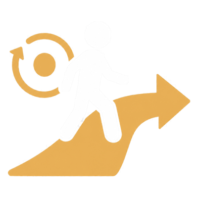
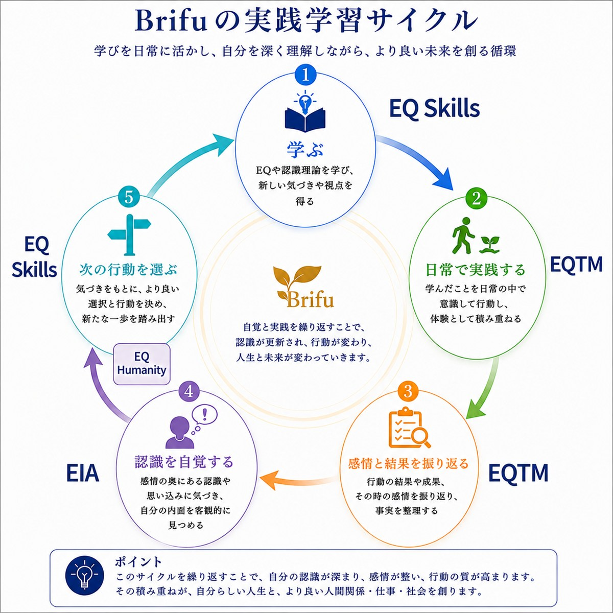
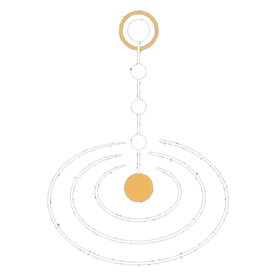
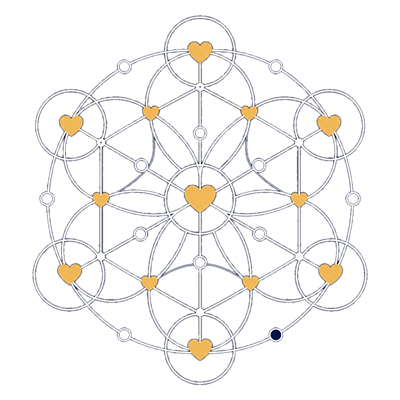

01 — SELF
自分自分の心が分かる。
- 今、何を感じているのか
- なぜ、そう感じているのか
- 何を大切にしているのか
- 本当は、どうしたいのか
↓自分で、自分の一歩を選べる。

「人の心にイノベーション」を起こし、
社会に「真のイノベーション」を創り出す。
人の心に、イノベーションを起こす。
人の心にイノベーションが起きることで、自分も相手も大切にできる人が増えていく。その積み重ねによって、「お互いを大切にする社会」が生まれる。
私たちBrifuの目的は、「人の心にイノベーション」を起こし、社会に「真のイノベーション」を創り出すこと。技術や制度を変える前に、それを使う人の心が変わること。
すべては、そこから始まると考えています。
それは、技術でも、制度でも、仕組みでもなく。
そして、心が変わると——
だからBrifuは、
「人の心」にイノベーションを起こす。


原因は、「能力」だけではない。
知識もある。やる気もある。それでも同じ問題が繰り返されるとき、感情が認識をつくり、認識が選択を決め、選択が行動になり、行動が結果を生む。
その結果を振り返ることで、認識が更新される。私たちは、この循環そのものを変えていきます。
人は認識によって行動する。認識を整え、感情を力に変え、豊かな人生と社会を創る。— EQ認識理論
EQ（Emotional Intelligence）は、「感情をコントロールする力」だと思われがちです。
私たちの定義は少し違います。感情を、認識を、行動を、
自分と相手の可能性を活かすために使う力。
それがEQです。
EQとは、
自分と人の可能性を活かす力。
自分の感情に気づき、認識を見直し、目的から選び、行動する。
相手の感情に目を向け、認識の違いを確かめ、本音で対話する。この往復が、自分にも相手にも「可能性」を残します。

SELF感情・価値観・認識を知る

EXPRESS自分の状態を言葉にする

OTHERS相手の認識に関心を向ける

ACTION目的から選び、振り返る
「感情を知る」「認識を見直す」は、学ぶ内容です。
でも本当に知りたいのは、それを学んだ結果、私はどうなるのか。だから私たちは、「学ぶもの」と「得られるもの」を分けてお伝えします。


自分から始まり、人へ、チームへ、組織へ、社会へ。一つの変化が、次の変化を生みます。


知識を増やし、一人で実践して広げていく横成長。
人と関わり、自分では見えない自分に気づいて深めていく縦成長。Brifuの学びは、この2つを掛け合わせます。
知識だけでは見えない自分がいる。だから、人との関わりが必要になります。
感情の扱い方、思考の癖、行動の選び方を基礎から学ぶ。
仲間と日常で実践し、振り返りながら習慣にする。
できることが増える
対話とフィードバックの中で思い込みに気づき、認識を自覚して更新する。
他者理解と関係づくりを深め、視座を広げて、人としてのあり方を育てる。
自分のあり方が変わる
横成長で「できること」を増やし、縦成長で「あり方」を深める。2つが重なったとき、人は変わっていきます。
人との関わりを通じて、自分では見えない自分に気づく。
これが、EQの学びの本質です。知識を増やすだけでは届かない場所に、対話とフィードバックが連れていってくれます。
学びが日常に降りてきて、はじめて認識が動きます。Brifuの学びは、この循環を回し続けるための設計です。

積み重ねることで、認識が更新され、行動が変わっていく。

見えなかった4つを、目に見える言葉にする道具。
それがEQコアカードです。
EQコアカードは、商品として生まれたものではありません。
「人の心を理解するには、まず自分の感情・価値観・認識を知る必要がある」——その必然から生まれた、上の循環を日常で回すための実践ツールです。目に見えないEQを、より具体的に、より分かりやすく言語化し、表現する方法として開発されました。
EQを学び、実践し、人間力を育てる教育プラットフォーム。入口から社会実装まで、6つのステージがつながっています。
※各ステージへの移行には、Brifuが定める受講条件・実践条件があります。
 入口・はじめの一歩
入口・はじめの一歩情報・診断・体験・コンテンツ。動画、勉強会、セルフチェック、入門セミナーで、EQに触れ、自分を知るきっかけをつくる。
EQ Gateを体験する 学ぶ — スキル習得
学ぶ — スキル習得感情リテラシー、コミュニケーション力、自己理解・対人理解、行動スキルの習得。感情の扱い方・思考の癖・行動の選択を学ぶ基礎プログラム。
 気づき・変わる — 認識更新
気づき・変わる — 認識更新自己受容・価値観の言語化、思考の客体化、感情の受容・本質理解。認識を自覚し、更新する継続成長プログラム。
EIAを詳しく見る 育つ・高める — 人間力向上
育つ・高める — 人間力向上メタ認知・関係構築、他者理解・合意形成、視座の拡大・使命の発見。人格・人間力を高め、実践へつなげる。
 実践する — 実践・習慣化
実践する — 実践・習慣化仲間と実践する場。トレーニング・習慣化、実践の共有・フィードバック、価値創造・社会貢献。理念を実践しながら行動を継続する。
 活かす — 社会実装
活かす — 社会実装経営コンサルティング、ビジネス構築支援、組織づくり支援、EQ認識理論コーチング、人材育成支援、社会実装支援。学びを個人・企業・社会へ実装する。
循環が、成長を加速させ、未来を創る。
EQ Platformサイトへ →学びの循環が、社会の変化を生み出す。
これが私たちの考える、「真のイノベーション」です。

「人の心にイノベーション」を起こし、社会に「真のイノベーション」を創り出す。

EQを高めて自分と人の可能性を信じ、人・組織の真の幸せを導けるリーダーを輩出する。

一人ひとりが感情を大切にし、お互いを大切にする社会をつくる。

全感謝・貢献。可能性・挑戦。心理的安全性——安心して本音で関われる関係を育む。
いま起きていることを8つの質問から整理し、あなたの「変化の入口」を見つけます。EQを知らなくても、そのまま答えられます。
点数はつけません。